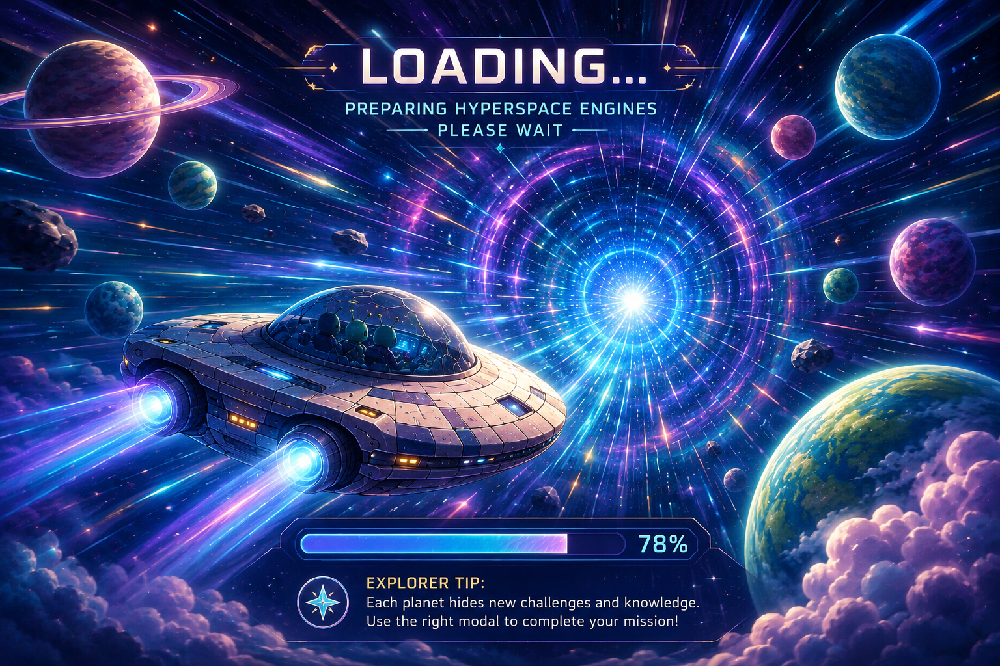
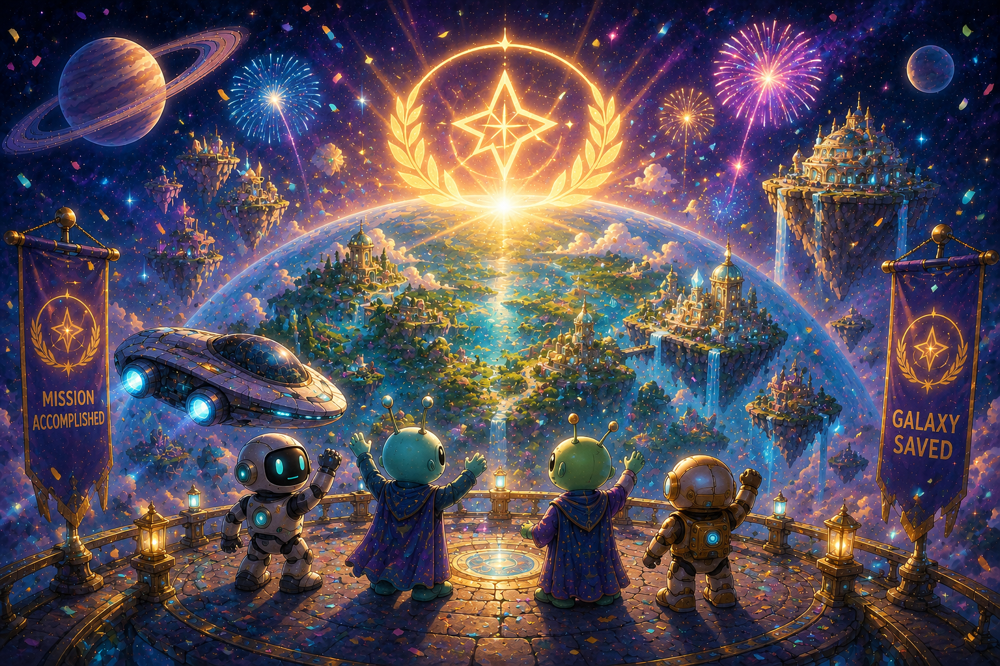
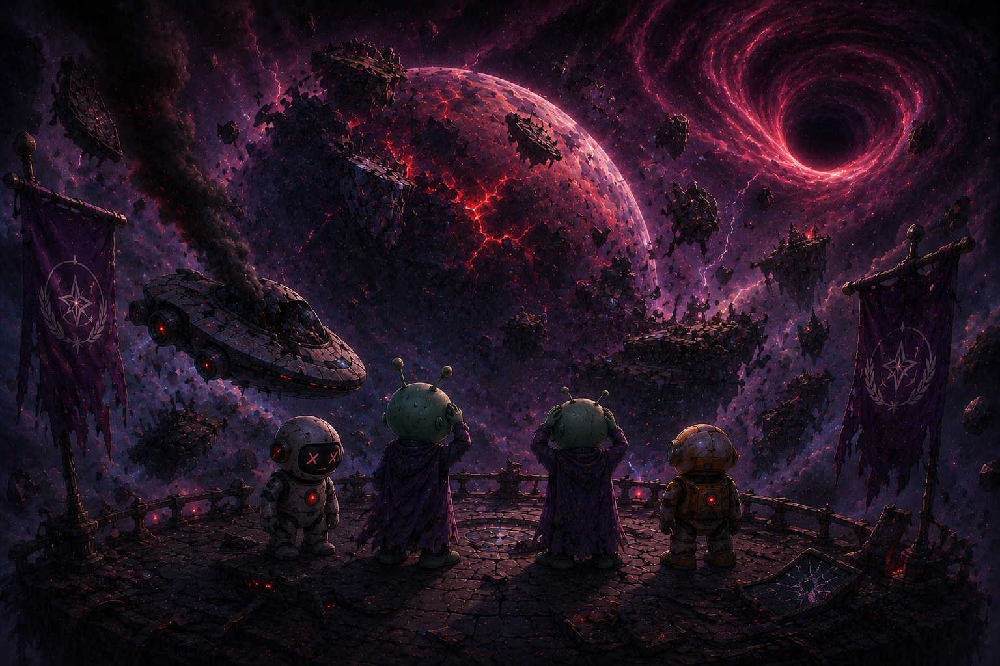
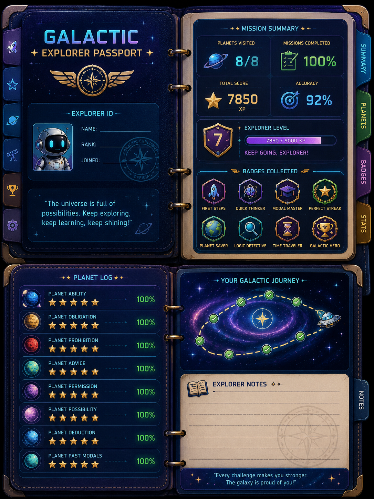

Select an unlocked planet to begin. Complete a planet to unlock the next.

Loading…
Preparing hyperspace engines…
Gap fill
Question 1 / 12
Mission Complete

Galaxy Saved!
You mastered the modals.
Badges Collected

Lost in Space
Your mission failed.

Explorer ID
Cadet Explorer
"The universe is full of possibilities. Keep exploring, keep learning, keep shining!"
Planet Log
Badges Collected
- 1Choose a planet on the Galaxy Map. Each planet teaches one family of English modal verbs.
- 2Answer 12 TOEIC-style questions per planet by selecting the best modal verb.
- 3Correct answers restore fuel and earn star crystals, points, and streaks.
- 4Wrong answers reduce your fuel, oxygen, and lives — so think before you tap.
- 5Use hints carefully: each hint costs 2 points.
- 6Complete a planet to earn its badge and unlock the next one.
- 7Save the galaxy by mastering all eight modal families.
Correct answer
+10 points · +1 star crystal · +1 streak · +5% fuel
+10 points · +1 star crystal · +1 streak · +5% fuel
Wrong answer
−1 life · −15% fuel · −10% oxygen · streak resets
−1 life · −15% fuel · −10% oxygen · streak resets
Streak bonus
3 in a row → "Cosmic streak!" +5 points
3 in a row → "Cosmic streak!" +5 points
Game over
If lives, fuel, or oxygen reach 0
If lives, fuel, or oxygen reach 0
Star rating per planet — ★★★ 90%+ · ★★ 70–89% · ★ below 70%.